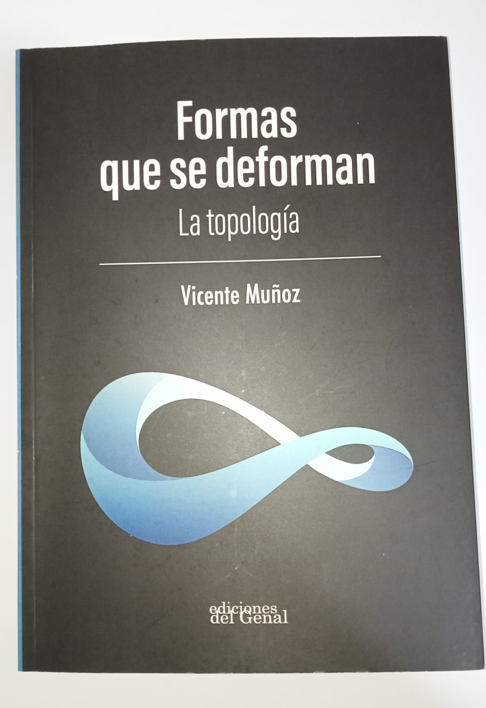
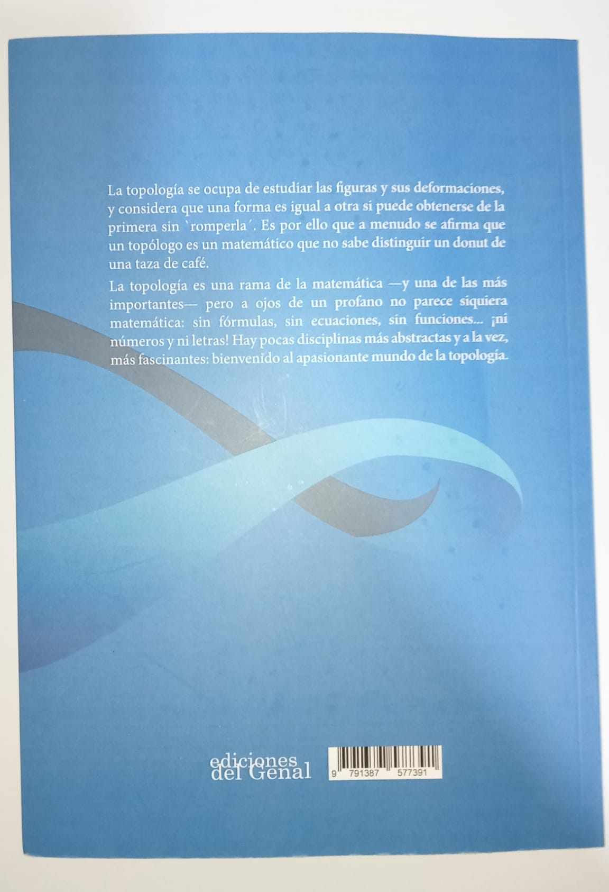

Hace poco más de un mes, el matemático y divulgador Miguel Ángel Morales Medina (autor del reconocido blog Gaussianos y gran colaborador en el grupo de Telegram Retos Matemáticos) organizó el sorteo de un ejemplar de Formas que se deforman: la topología, cedido por su autor Vicente Muñoz Velázquez (catedrático de Geometría y Topología en la Universidad Complutense de Madrid) con motivo de la celebración del día del libro. Yo participé con la misma actitud con la que juego la lotería: con ilusión, pero asumiendo de antemano que ganar era altamente improbable; no obstante, fue grata mi sorpresa cuando me comentaron que había sido elegido, y aún mayor cuando por fin tuve el libro entre mis manos. Tras varios días de lectura, he organizado mis pensamientos sobre la obra, y la compilación de estos es el breve texto que sigue a continuación.
No obstante, antes de proceder es imperativo resaltar que en el momento en el que publico esta reseña no tengo conocimientos formales sobre topología, por lo que el lector debería tomar mis opiniones cum grano salis; además, el lector ha de saber que partes fundamentales de la narrativa se mencionan explícitamente, y si bien este hecho en un libro de matemáticas no suele ser demasiado relevante, aquel que únicamente quiera escuchar mi veredicto puede saltar a las conclusiones finales. Por último, quisiera aprovechar la ocasión para agradecer a Miguel Ángel y al autor la oportunidad de acceder a tan sucinta introducción a esta rama.
La cosmología como reclamo¶
Un vistazo a la plétora de libros sobre divulgación física en el mercado (así como a la popularidad de los vídeos de YouTube con este mismo propósito) demuestra que existe un gran interés del público general por esta disciplina, en particular por aquellas cuestiones que rozan la metafísica al tratar aspectos fundamentales como la creación del Universo o su forma.
El autor emplea la última de las incógnitas anteriores como gancho y ejemplo motivante de cara al estudio matemático de la topología, lo que desde mi perspectiva es una decisión acertada, a pesar de que quizás un acercamiento histórico hubiese satisfecho mejor mis intereses personales.
Me gustaría remarcar que sí que se ahonda en este tema, a pesar de no ser el centro del texto evidentemente, incluyendo un breve vistazo a la relatividad general de Einstein en el final, así como un estudio más o menos exhaustivo sobre la curvatura del Universo, las consecuencias del signo de este valor, y los experimentos que se han llevado a cabo para su medición.
Planilandia como hilo conductor¶
Cuando uno se enfrenta a un problema de considerable dificultad, una estrategia común (que también se menciona aquí), es reducirlo a un caso particular más manejable para obtener ideas que más adelante puedan ser extrapolables al problema real.
La historia contiene la subtrama de Planilandia, un mundo constituido por seres bidimensionales (polígonos, en particular) con las mismas inquietudes que la raza humana, los cuales sí logran descubrir cuál es la forma del universo en el que habitan. Ciertamente se siente como un viaje en el que acompañar a los planilandeses mientras uno estudia las 2-variedades antes de atacar la cuestión que verdaderamente nos incumbe, pero tras concluir nos sirven de inspiración y nos llenan de motivación. Al fin y al cabo, si Rombete y compañía pudieron desentrañar su universo empleando para ello solo la razón, ¿por qué nosotros no podríamos?
Lo que hace a Planilandia memorable es que se siente como un viaje genuino. En parte porque su historia se extiene a lo largo de más de la mitad del libro, pero en parte también porque aunque casi no se emplean ecuaciones a lo largo del texto, el razonamiento que se sigue es enteramente deductivo (salvo cuando algún resultado posee una demostración demasiado compleja y llena de matices que no puede ser simplificada para el lector inexperto); uno no está viendo a los planilandeses solamente, está aprendiendo con ellos.
No hace falta rigor para divulgar¶
El autor recurre muy pocas veces a las fórmulas simbólicas, excluyendo la característica de Euler y teorema de Gauss-Bonnet en una forma considerablemente simplificada, y es que en ocasiones los teoremas fundamentales de algunas ramas de las matemáticas son conocimientos de naturaleza tan abstracta que pueden entenderse conceptualmente a costa de dejar a un lado los formalismos, perdiendo rigor, eso sí.
Pero pienso que el propósito de un divulgador es ese, el de destilar los resultados envueltos en notación y especificidades para obtener su esencia, aquella idea feliz que cambia la forma de pensar de quien logra comprenderlos.
Algo parecido puede verse en el capítulo 3, pues su cénit es el teorema de clasificación de superficies. Es en este momento que uno aprecia cómo se cierra una teoría, cómo una investigación que se ha ido desarrollando poco a poco junto al lector (aún con sus simplificacines, recordemos que este es un libro divulgativo) acaba concluyendo en un razonamiento fundamental a un nivel superior, etéreo incluso, que sin embargo no es en absoluto trivial. Por momentos como ese pienso que las matemáticas son la única ciencia sintética a priori, ya que cualquier otra precisa de la observación para llegar a estas conclusiones.
Y precisamente resalto este como el momento álgido del libro, a pesar de ser anterior al meridiano, por la sensación que provoca. Recuerdo hace algunos años una experiencia similar en Introduction to Graph Theory, de Richard J. Trudeau, al derivar el teorema de Kuratowski para resolver finalmente el problema de la planicidad en grafos (otro libro ciertamente notable).
Lo no tan bueno¶
Son pocas las objeciones que puedo hacer, y se remiten principalmente a pequeños detalles que tienen medida nula en comparación a las continuas bazas que ya se han comentado.
En primer lugar hacer mención de un detalle sin demasiada relevancia, que las ilustraciones que no son propias del libro (asumo que archivos JPG obtenidos de otras fuentes) han sido incluidas con una calidad bastante mala, que debería ser revisada de cara a una futura edición. Afortunadamente son pocas y no cumplen un rol esencial en las explicaciones; el material original elaborado por el autor no sufre de estas asperezas.
Seguidamente, su precio también puede ser un detractor, puesto que aunque no es prohibitivo, bien es cierto que dada su extensión y el hecho de estar en blanco y negro a mi parecer debería colocarlo en el umbral de los 10-15€, mientras que al momento de la publicación de este artículo puede adquirirse por 18€ en el sitio web de la editorial.
Su longitud es quizás otro inconveniente; 170 páginas se me han hecho cortas, y es que hubiese disfrutado de un poco más de esta prosa, aunque esto se debe también a que la calidad de la misma es excelente.
Conclusiones¶

En definitiva, dicho todo lo anterior, pienso que el libro es muy recomendable para quien se lo pueda permitir. Uno ha de asumirlo con la mentalidad de que es de naturaleza divulgativa, en el que no verá formalismos ni el formato teorema/demostración al que acostumbran los libros de texto al uso, pero creo que hasta quienes no tienen una profesión técnica pueden disfrutar de este texto por la claridad con la que se presentan los conceptos. Eso sí, para estos últimos (y para el resto, dicho sea) sobra mencionar que como toda lectura sobre matemáticas, de vez en cuando hay que pararse a pensar.